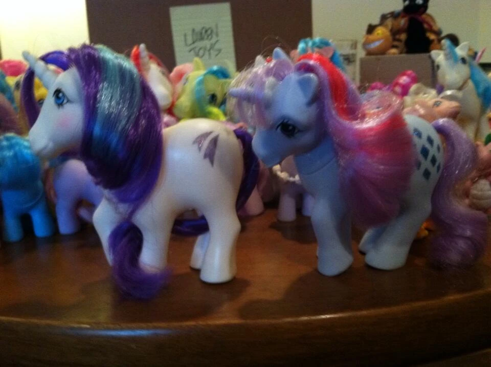
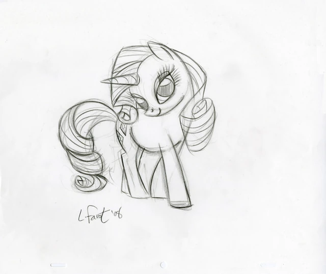

Rarity

✧ Ella era una modista en el pueblo de Ponyville. Es muy creativa, le encanta la moda, su sueño era tener una boutique en Canterlot.
(una ciudad como de la "alta sociedad", como la capital del reino o algo así. En Canterlot viven las princesas gobernantes de Equestria).
Su cutie mark son tres gemas celestes y representan su talento de encontrar el lado bello de las cosas.
El elemento de la armonía que ella representa es el de la generosidad.
❁ ◡ ❁ ◡ ❁ ◡ ❁ ◡ ❁ ◡ ❁ ◡ ❁ ◡ ❁ ◡ ❁ ◡ ❁ ◡ ❁ ◡ ❁ ◡ ❁ ◡ ❁ ◡ ❁ ◡ ❁ ◡ ❁ ◡ ❁ ◡ ❁
Diseño
Para Rarity, Faust se basó en dos personajes de la G1 llamados Glory y Sparkler:
|  |  |
 |